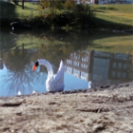
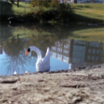

-

Anna Duo Designs
Anna Duo Designs
Paperquilling is a side hobby I enjoy doing, my first attempt at paperquilling was a portrait of YouTuber Colby Brock. I do portraits such as these as a token of thanks to those who have inspired me to work hard and do what I love doing.
This portrait is a portrait of my best friend and myself, I created this portrait because my best friend is the most inspiring person I know. I value our friendship more than life and this portrait is a symbol of our friendship.
 
